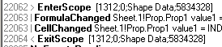
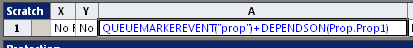
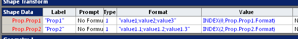
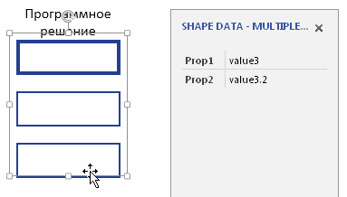

Описание задачи. Шейп имеет два поля данных. Оба - фиксированные списки. Причем второй список зависит от того, какое значение выбрано в первом списке. По-существу, получается двух уровневый список в Shape Data.
Prop1 = value1; value 2; value 3 - первый список
Prop2= value1.1; value1.2; value1.3 - при Prop1 = value1
Prop2= value2.1; value2.2; value2.3 - при Prop1 = value2
Prop2= value3.1; value3.2; value3.3 - при Prop1 = value3Задача сводится к тому, что после выбора конкретного значения из первого списка нужно изменить второй список, чтобы в нем появились соответствующие значения.
В принципе, это можно сделать как программно, так и на уровне шейп-листа.
Программное решение
Алгорим программного решения предельно прост - поймать событие изменения данных для Prop1 и в обработчике записать новую строку в ячейку Format Prop2. В качестве события подшла бы ячейка TheData секции Events. Но к сожалению, эта ячейка уже много лет остается "reserved for future use", то есть не работает. Значит придется искать другое событие.
Лучший способ подбора нужного события - запуск Event Monitor. Раньше он поставлялся отдельно от Visio в составе Visio SDK, который нужно было скачивать и устанавливать отдельно. Сейчас имеется готовая кнопочка на вкладке Developer.
Запускаем, сбрасываем все фильтры, щелкаем Prop1 в окошке данных шейпа и видим, что при переключении возникают всего лишь два события: FormulaChanged и CellChanged.

Это разочаровывает, потому как события достаточно неудобные. Они ведь срабатывают при любом изменении любой ячейки. Значит теоретически обработка таких событий может замедлить работу Visio. Пользоваться, конечно, можно. Только желательно пометить нужные шейпы каким-либо уникальным признаком и в самом начале обработчика отфильтровывать все изменения всех ячеек, кроме Prop1.Value нужных шейпов.
Самое время вспомнить, что Visio позволяет разработчику генерить собственные события с помощью функции QUEUEMARKEREVENT. Это уже более тонкий инструмент, который можно настроить даже на единственный шейп или ячейку. Например, так

Теперь при каждом изменении свойства Prop1 приложение будет ловить событие MarkerEvent. Если бы источников было много, то дополнительный аргумент (в данном случае "prop") мог быть использован для фильтрации. Если такой необходимости нет, то ContextString в обработчике можно просто не анализировать.
В обработчике события MarkerEvent в зависимости от значения первого свойства записываем тот или инй список в ячейку Format второго свойства.
Dim WithEvents app As Visio.Application
Sub Start()
Set app = ActiveDocument.Application
End Sub
Private Sub app_MarkerEvent(ByVal app As IVApplication, ByVal SequenceNum As Long, ByVal ContextString As String)
s = app.ActiveWindow.Selection(1).Cells("Prop.Prop1").ResultStr(0)
With app.ActiveWindow.Selection(1).Cells("Prop.Prop2.Format")
Select Case s
Case "value1"
.Formula = """value1.1;value1.2;value1.3"""
Case "value2"
.Formula = """value2.1;value2.2;value2.3"""
Case "value3"
.Formula = """value3.1;value3.2;value3.3"""
End Select
End With
End SubНеобходимая дополнительная нагрузка - переменная app ее инициализация. В примере переменная инициализируется процедурой Start. В рабочем приложении логично делать это в обработчике события октрытия документа.
Решение в ShapeSheet
Как уже сказано выше, задача имеет решение и на уровне шейп-листа. Здесь уже не требуется обработка событий, достаточно формулами выделить нужный фрагмент данных и подставить его в ячейку Format.
Формул требуетя много, но все они упаковываются в одну строку секции Scrath. Разберем формулы подробнее.

Scratch.A1=LOOKUP(Prop.Prop1,Prop.Prop1.Format)Формула в Scratch.A1 вычисляет позицию выбранного значения в списке выбора первого свойства. В данном случае будет принимать значение 0,1или 2.
Scratch.B1="value1.1,value1.2,value1.3;value2.1,value2.2,value2.3;value3.1,value3.2,value3.3"Scratch.B1 содержит список для всех возможных значений второго свойства. Заметим, что в списке использованы разные разделители: запятая и точка с запятой. Это важно, потому как в каждом конкретном случае из этого комбинированного списка нужно выделить подсписок. Но Visio требует, чтобы значения в списке разделялись точкой с запятой. Поэтому выборка производится в два этапа. Сначала выбирается список второго уровня как одно значение (с запятыми). Потом в ячейке Scratch.C1 запятые превращаются в точки с запятой и список получает нужный формат.
Scratch.C1=SUBSTITUTE(INDEX(Scratch.A1,Scratch.B1),",",";")Остается только функцией SETF забросить полученный список в ячейку Prop.Prop2.Format.
Scratch.D1=SETF(GetRef(Prop.Prop2.Format),Scratch.C1)Это все. Решение на уровне шейп-листа внешне для пользователя выглядит точно так же, как и программное решение. Формулы немного посложнее, зато отсутствуют макросы, значит не требуется утрясать связанные с ними вопросы безопасности.
Групповое переключение
Пожалуй, следует рассмотреть и этот вопрос. Дело в том, что окно Shape Data в принципе позволяет изменять значения одновременно в нескольких шейпах. Это требуется не часто, но все-таки иногда требуется. И при групповом переключении приведенные решения ведут себя по-разному.
Решение на уровне шейп-листа работет так, как и ожидается. То есть групповые операции срабатывают так, как будто действия выполнены с каждым шейпом по-отдельности.

Да это и понятно. Ведь формулы действуют внутри каждого шейпа.
А вот попытка сделать то же самое для опубликованного выше программного решения не проходит.

Причина понятна - приведенный выше обработчик изменяет формулу только в одном шейпе - первом из селектированных. Это нужно менять.
Событие MarkerEvent будет сгенерировано для каждого из селектированных шейпов. Значит, в параметрах нужно каким-то образом передать указание на шейп. Таким указанием может стать идентификатор шейпа, переданных в параметре ContextString. Для этого изменяем формулу с QUEUEMARKEREVENT, добавляя функцию ID().
Scratch.A1= =QUEUEMARKEREVENT("prop"&ID())+DEPENDSON(Prop.Prop1)И меняем обработчик
Private Sub app_MarkerEvent(ByVal app As IVApplication, ByVal SequenceNum As Long, ByVal ContextString As String)
s = app.ActiveWindow.Selection(1).Cells("Prop.Prop1").ResultStr(0)
If Left(ContextString, 4) <> "prop" Then Exit Sub
ind = CLng(Mid(ContextString, 5, Len(s) - 4))
With app.ActivePage.Shapes.ItemFromID(ind).Cells("Prop.Prop2.Format")
Select Case s
Case "value1"
.Formula = """value1.1;value1.2;value1.3"""
Case "value2"
.Formula = """value2.1;value2.2;value2.3"""
Case "value3"
.Formula = """value3.1;value3.2;value3.3"""
End Select
End With
End SubТеперь Visio будет искать шейп на активной странице по идентификатору шейпа. Проверка показывает, что исправленное программное решение заработало нормально.
В итоге получаем, что программное решение не только тянет за собой макросы, но и может добавить некоторые "подводные камни", которые могут быть пропущены при первоначальном тестировании и выяввятся только впоследствии. Так что решение в шейп-листе для данной задачи явно выглядит предпочтительным.